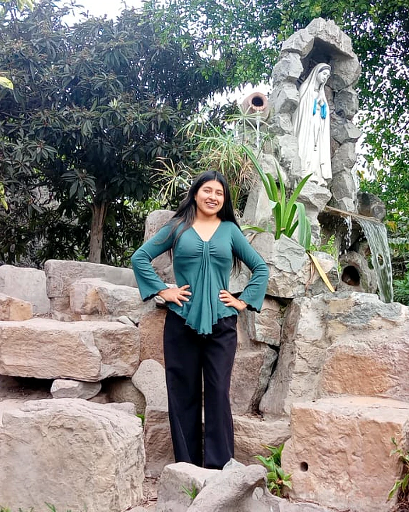
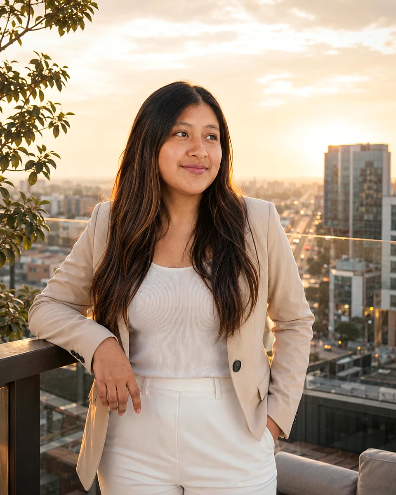
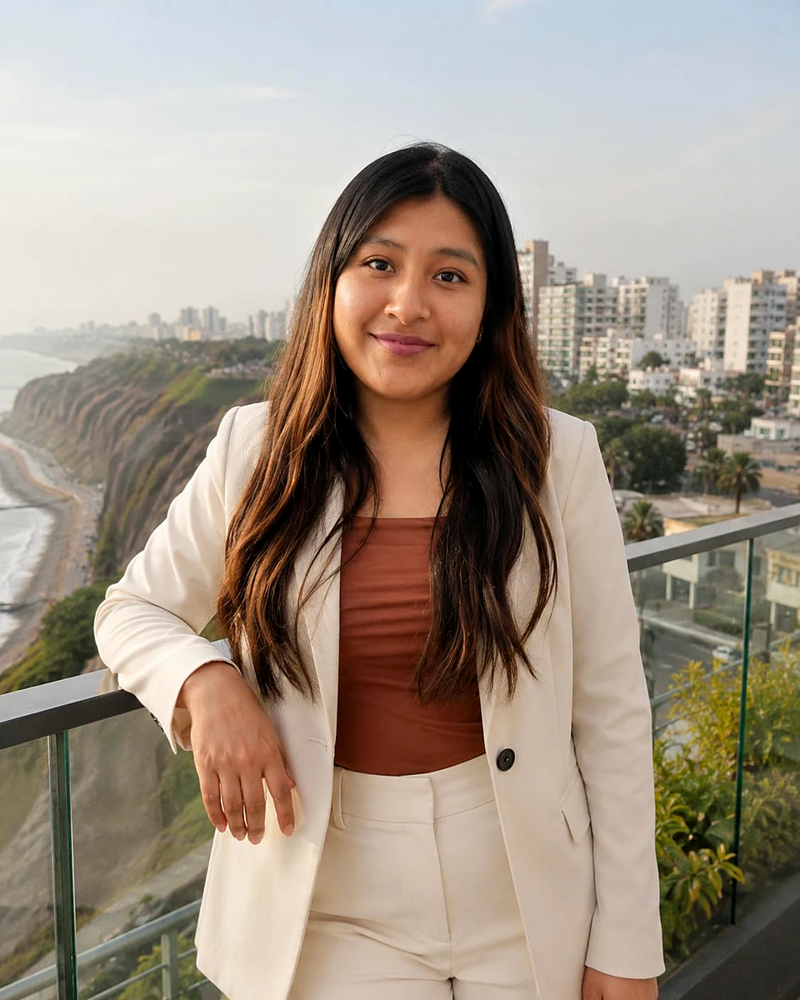
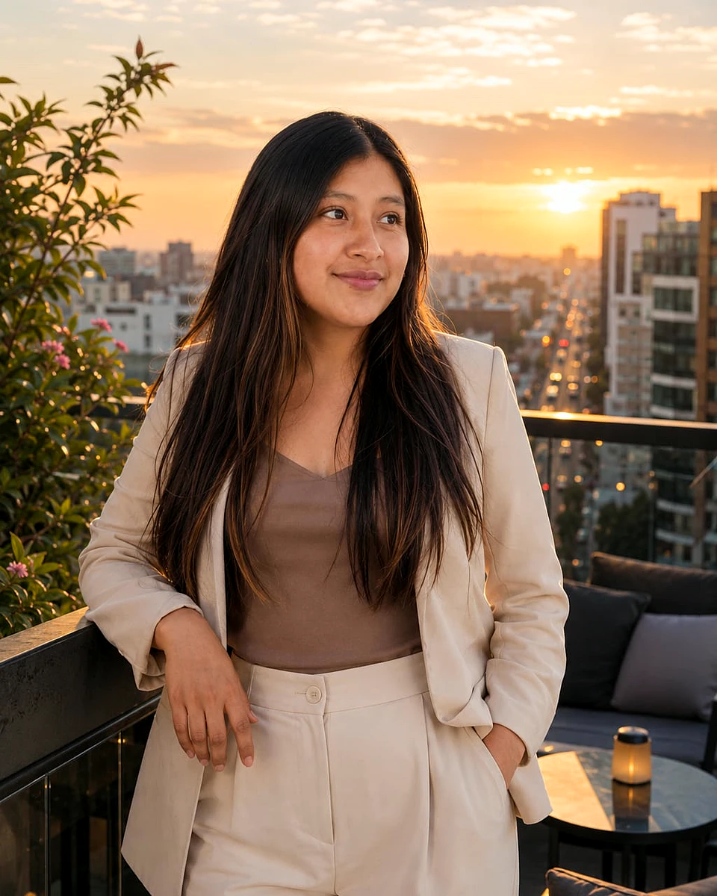

Talleres
Sesiones prácticas para grupos, aulas y centros de estudio, con casos peruanos y dinámicas.
- Selección por competencias
- Clima laboral y bienestar
- Primeros pasos en planillas
Quién soy
Estudio Ciencias Administrativas y creé VÍVELO RH. Si algo me emociona, lo vas a notar: «¡qué bacán!», «¡qué divino!», «¡qué chulo!»… y si me propones algo, «¡dale!».
Conversemos por WhatsApp




Mi carta
Lo que más me enamoró de la Gestión del Talento Humano es algo muy simple: desde aquí se puede mejorar la vida de las personas. Cómo se sienten al llegar al trabajo, cuánto pueden crecer y si el lugar donde pasan tantas horas es alegre y cómodo para cada una. Cuando entendí eso, pensé: qué bacán.
Pero creo que mucha gente elige, o descarta, esta profesión sin haberla vivido. Por eso hice VÍVELO RH: un lugar donde puedes pasar una semana en el escritorio de una analista, abrir su bandeja, equivocarte con una planilla y escuchar cómo lo habría pensado alguien con experiencia. Sin riesgo, sin vergüenza y con Kusi al lado.
Si al terminar sabes un poco mejor hacia dónde ir, VÍVELO RH cumplió su trabajo. Y si descubres que esto también te apasiona… qué bacán.
Mi manifiesto
Cinco ideas que guían todo lo que hago. Toca cada una para darle la vuelta.
Toca o pasa el cursor por cada tarjeta.
Servicios
Sesiones prácticas para grupos, aulas y centros de estudio, con casos peruanos y dinámicas.
Casos de estudio y recursos listos para practicar o enseñar, basados en situaciones del Perú.
Te ayudo a dar tus primeros pasos en RR.HH.
Te respondo personalmente por WhatsApp.